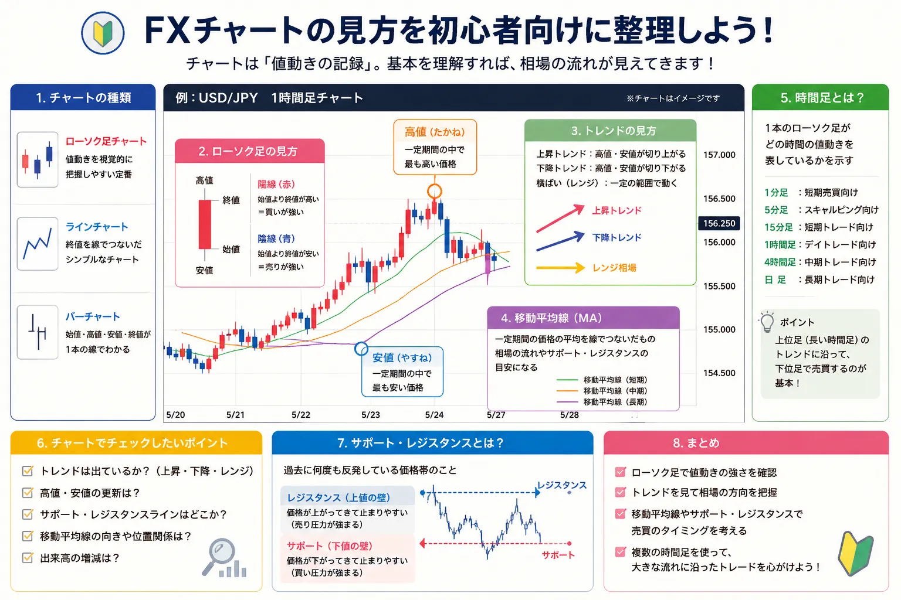
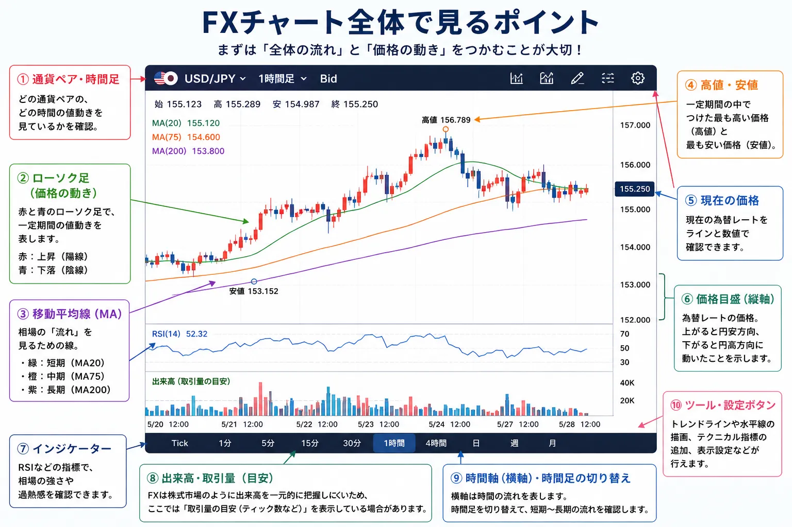
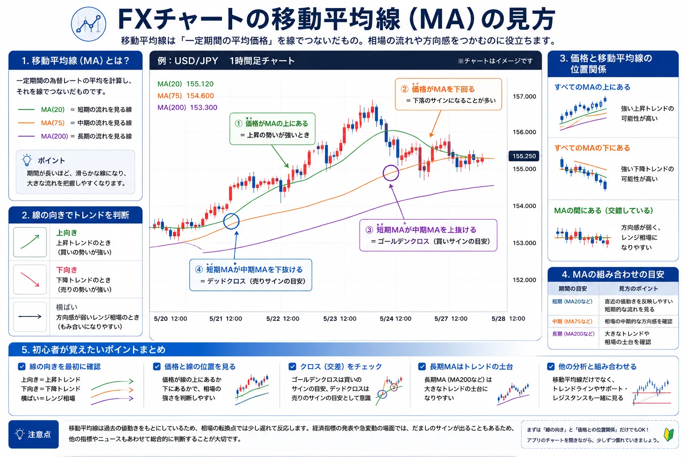
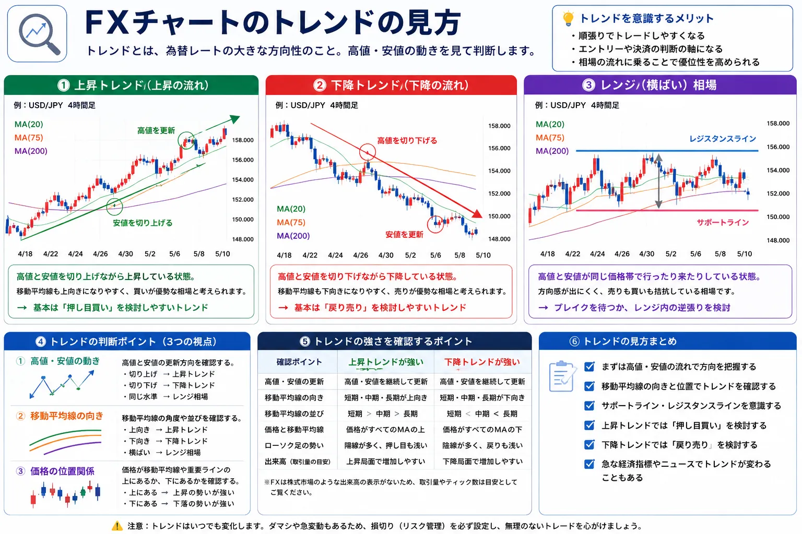
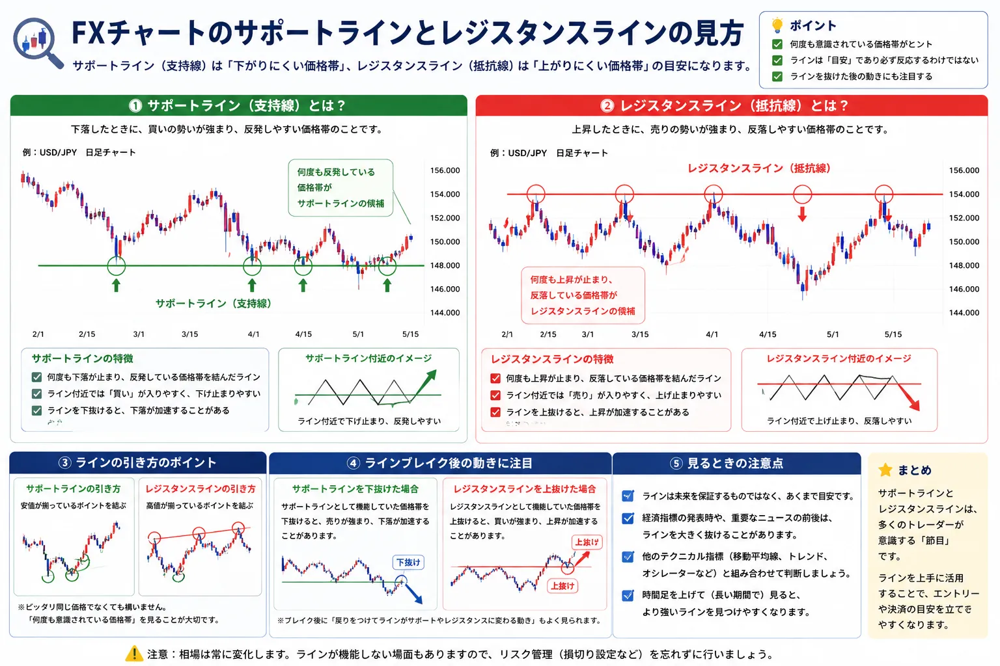

FXチャートの見方を初心者向けに解説｜ローソク足・移動平均線・トレンドの基本
FXチャートは何を見るもの？最初に全体像を整理

- FXチャートは、為替レートの動きを時系列で見るための図です
- 初心者は、ローソク足・移動平均線・トレンド・重要な価格帯から見ると整理しやすいです
- チャートだけで取引を決めるのではなく、経済指標やニュースもあわせて確認することが大切です
FXアプリやFX会社の取引画面を開くと、赤や青のローソク足、何本もの線、上下に動く為替レートが表示されます。
はじめて見ると「どこを見ればいいのか分からない」と感じやすいですが、最初からすべてを理解する必要はありません。
FXチャートは、細かく分析しようとすると奥が深い一方で、初心者が最初に押さえるべきポイントはかなり絞れます。
この記事では、FXチャートを見るときに大切な、ローソク足・移動平均線・トレンド・サポートライン・レジスタンスライン・為替レートの上昇と下落の見方を、初心者向けにやさしく整理します。
まずは全部ではなく「見る順番」を決める
チャートを見るときは、いきなり細かい形を覚えるよりも、為替レートが上向きなのか、下向きなのか、どの価格帯で止まりやすいのかを確認するところから始めると分かりやすいです。
そのため、初心者は「ローソク足を見る」「移動平均線を見る」「トレンドを見る」「重要な価格帯を見る」という順番で確認すると整理しやすくなります。
チャート全体でまず見るポイント

- ローソク足で、為替レートがどのように動いたかを見る
- 移動平均線で、大きな流れを見る
- 高値と安値の流れから、上昇・下降・横ばいを確認する
- サポートラインやレジスタンスラインで、意識されやすい価格帯を見る
FXチャートは、いくつかの部品に分けて見ると分かりやすくなります。
まず中央に並んでいる赤や青の四角い形がローソク足です。これは、その期間に為替レートがどのように動いたかを表しています。
ローソク足の近くを通っている線は、移動平均線です。これは為替レートの平均的な流れを見るために使われます。
また、チャート全体の向きから、上昇トレンドなのか、下降トレンドなのか、横ばいなのかを確認できます。
初心者は、まずこの3つを見分けられるようになるだけでも、FXチャート画面への苦手意識がかなり減ります。
ローソク足とは？為替レートの動きを一本で表すもの

- ローソク足は、一定期間の為替レートの動きを一本で表します
- 始値・終値・高値・安値を確認できます
- 陽線は上昇、陰線は下落を表すことが多いです
- ヒゲを見ると、その期間中の値動きの幅も分かります
ローソク足は、FXチャートで最も基本になる表示です。
1本のローソク足には、始値、終値、高値、安値という4つの情報が入っています。
始値は、その期間の最初についた為替レートです。終値は、その期間の最後についた為替レートです。
高値はその期間中に最も高くなった価格、安値は最も安くなった価格を表します。
一般的に、終値が始値より高い場合は陽線、終値が始値より低い場合は陰線として表示されます。
色はFX会社やチャート設定によって違う場合がありますが、意味としては「その期間で上がったのか、下がったのか」を見るものです。
ヒゲが長いと何が分かる？
ローソク足の上下に伸びる細い線をヒゲと呼びます。
上ヒゲが長い場合は、一度高くなったものの、最後は押し戻されたことを示します。
下ヒゲが長い場合は、一度安くなったものの、最後は買い戻されたことを示します。
ただし、ヒゲだけで今後の値動きを決めつけるのは注意が必要です。ローソク足は、移動平均線やトレンド、ニュースなどと組み合わせて見ることで意味が分かりやすくなります。
移動平均線とは？為替レートの大きな流れを見る線

- 移動平均線は、一定期間の為替レートの平均をつないだ線です
- 短期線・中期線・長期線で、見る期間が変わります
- 為替レートが移動平均線の上にあるか下にあるかを見ると流れをつかみやすいです
- 線の向きが上向きか下向きかも重要です
移動平均線は、為替レートの平均値を線でつないだものです。
為替レートは細かく上下しますが、移動平均線を見ることで、大きな流れを確認しやすくなります。
たとえば、短期の移動平均線は直近の動き、中期や長期の移動平均線はもう少し大きな流れを見るときに使われます。
実際の設定はFX会社やチャート画面によって異なりますが、初心者はまず「短期・中期・長期の流れを見る線」と考えると分かりやすいです。
為替レートが線の上にあるか、下にあるかを見る
為替レートが移動平均線の上で推移している場合、比較的強い流れと見られることがあります。
反対に、為替レートが移動平均線の下で推移している場合、弱い流れと見られることがあります。
ただし、移動平均線も万能ではありません。短期的にはだましのような動きもあるため、トレンドやサポートライン、経済指標などもあわせて確認することが大切です。
トレンドとは？為替レートの方向を見る考え方

- トレンドとは、為替レートの大きな方向性のことです
- 高値と安値を切り上げていると上昇トレンドと見られやすいです
- 高値と安値を切り下げていると下降トレンドと見られやすいです
- 方向感が弱いときは横ばいの動きになることもあります
トレンドとは、為替レートの大きな流れのことです。
チャートを細かく見る前に、まずは上に向かっているのか、下に向かっているのか、横ばいなのかを確認すると全体像をつかみやすくなります。
上昇トレンドでは、高値と安値を少しずつ切り上げる動きが見られます。
下降トレンドでは、高値と安値を少しずつ切り下げる動きが見られます。
初心者は、細かいローソク足の形だけを見るよりも、まずはチャート全体を少し引いて見て、大きな方向を確認することが大切です。
サポートラインとレジスタンスラインの見方

- サポートラインは、下落したときに反発しやすい価格帯の目安です
- レジスタンスラインは、上昇したときに押し戻されやすい価格帯の目安です
- 何度も同じ価格帯で止まっているかを見ると分かりやすいです
- ラインは絶対ではなく、目安として見ることが大切です
サポートラインとは、為替レートが下がったときに下げ止まりやすい価格帯の目安です。
日本語では支持線と呼ばれることもあります。
レジスタンスラインとは、為替レートが上がったときに上げ止まりやすい価格帯の目安です。
日本語では抵抗線と呼ばれることもあります。
たとえば、過去に何度も同じ価格帯で反発している場合、その価格帯はサポートラインとして意識されることがあります。
逆に、何度も同じ価格帯で押し戻されている場合、その価格帯はレジスタンスラインとして意識されることがあります。
ラインは「絶対に止まる場所」ではない
サポートラインやレジスタンスラインは便利な考え方ですが、必ずそこで止まるわけではありません。
経済指標、金利、要人発言、相場全体の急変などによって、ラインを大きく抜けることもあります。
そのため、ラインは売買を決めつけるためのものではなく、多くの参加者が意識しやすい価格帯を確認するための目安として見るのが自然です。
為替レートの上昇・下落はどう見る？
- FXでは、通貨ペアごとに価格が表示されます
- USD/JPYが上がると、ドル高・円安方向の動きと考えられます
- USD/JPYが下がると、ドル安・円高方向の動きと考えられます
- どちらの通貨が強く、どちらの通貨が弱いかを見ることが大切です
FXチャートを見るときは、通貨ペアの意味も理解しておくと分かりやすくなります。
たとえば、USD/JPYは「米ドルと日本円」の通貨ペアです。
USD/JPYのチャートが上昇している場合、米ドルが円に対して高くなっている、つまりドル高・円安方向の動きと考えられます。
反対に、USD/JPYのチャートが下落している場合、米ドルが円に対して安くなっている、つまりドル安・円高方向の動きと考えられます。
初心者は、チャートの形だけでなく「どの通貨が強くなっているのか」を意識すると、為替の値動きが理解しやすくなります。
初心者がFXチャートを見るときの基本手順
- まずチャート全体を見て、上昇・下降・横ばいを確認する
- ローソク足で、直近の値動きの強弱を見る
- 移動平均線で、大きな流れと為替レートの位置を見る
- サポートラインやレジスタンスラインとして意識されやすい価格帯を見る
- 最後に、経済指標やニュース予定も確認する
| 見る場所 | 何を見るか | 分かること | 初心者の見方 |
|---|---|---|---|
| ローソク足 | 始値・終値・高値・安値 | その期間の値動き | 上がったのか下がったのかを確認します |
| 移動平均線 | 線の向きと為替レートの位置 | 大きな流れ | 価格が線の上か下かを見ます |
| トレンド | 高値と安値の流れ | 上昇・下降・横ばい | 全体を引いて見て方向を確認します |
| 支持線・抵抗線 | 止まりやすい価格帯 | 意識されやすい水準 | 何度も反発・反落している場所を見ます |
| 経済指標 | 発表予定やニュース | 急変動のきっかけ | 重要発表の前後は慎重に見ます |
FXチャートを見るときは、細かいサイン探しから入るよりも、全体の流れをつかむことが大切です。
まずは上がっているのか、下がっているのか、横ばいなのかを確認します。
そのうえで、ローソク足、移動平均線、トレンド、支持線・抵抗線を順番に見ると、チャートの意味が少しずつ整理しやすくなります。
チャートを見るときに初心者が注意したいこと
- チャートだけで必ず上がる・下がると決めつけない
- 短期の値動きだけで慌てて判断しない
- 経済指標や要人発言の前後は急変動に注意する
- レバレッジをかけすぎない
- 損失が大きくならないよう、資金管理を意識する
チャートはとても便利ですが、未来を確実に当てる道具ではありません。
きれいな上昇トレンドに見えても、経済指標やニュースによって急に下がることがあります。
反対に、弱そうなチャートに見えても、金利や要人発言などをきっかけに大きく上がることもあります。
そのため、チャートはあくまで判断材料のひとつとして使うことが大切です。
FX取引を行うときは、為替レートの流れだけでなく、経済指標、金利、ニュース、取引時間帯、自分の資金管理もあわせて確認しましょう。
初心者がまず見るべき4つ
- 為替レートは上向きか、下向きか
- 為替レートは移動平均線の上にあるか、下にあるか
- 高値と安値は切り上がっているか、切り下がっているか
- 何度も止まっている価格帯があるか
※チャートの見方に絶対の正解はありません。最初は「全体の流れを確認する道具」として使うと理解しやすくなります。
FXチャートの見方とあわせて読みたい関連記事

FXチャートの見方を理解したら、FXの基本用語やレバレッジ、スプレッド、もあわせて確認しておくと、取引画面の意味がより分かりやすくなります。
以下の関連記事も参考にしてみてください。


FX口座の比較を見ておきたい方へ
一般ユーザー目線の体験でおすすめの会社をご紹介

よくある質問（FAQ）

-
Q. FXチャートは初心者でも読めますか？
最初からすべてを読む必要はありません。初心者は、ローソク足、移動平均線、トレンド、サポートライン・レジスタンスラインから見ると整理しやすいです。 -
Q. FXのローソク足とは何ですか？
ローソク足とは、一定期間の始値・高値・安値・終値を一本の形で表したものです。為替レートが上がったのか下がったのか、どのくらい動いたのかを確認しやすくなります。 -
Q. 移動平均線は何を見るための線ですか？
移動平均線は、一定期間の為替レートの平均を線でつないだものです。相場の大まかな流れや、短期・中期・長期の方向感を見るときに使われます。 -
Q. FXチャートでは出来高を見られますか？
FXは株式市場のように取引所で全体の出来高を一元的に確認しにくいため、FX会社の画面では出来高ではなくティック数や取引量の参考表示が使われる場合があります。初心者はまずローソク足、移動平均線、トレンドを優先して確認すると分かりやすいです。 -
Q. チャートだけでFX取引をしてもよいですか？
チャートは判断材料のひとつですが、チャートだけで判断するのは注意が必要です。経済指標、金利、要人発言、ニュース、取引時間帯などもあわせて確認することが大切です。
ご利用にあたっての注意事項
本記事は情報提供を目的としており、投資の勧誘を目的としたものではありません。外国為替証拠金取引（FX）は元本保証がなく、為替変動、金利変動、スプレッドの変動、流動性の低下等により損失が生じる場合があります。また、レバレッジを利用することで、預け入れた証拠金を上回る損失が発生する可能性もあります。チャート分析にはさまざまな考え方があり、通貨ペアや相場環境、取引目的によって見方は異なります。取引開始前に、契約締結前交付書面や商品説明書等を必ずご確認のうえ、ご自身の判断と責任でお取引ください。
最終更新日：2026-05-15